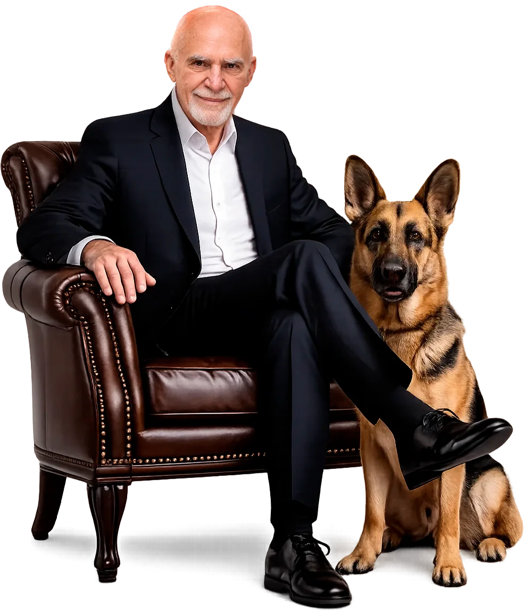
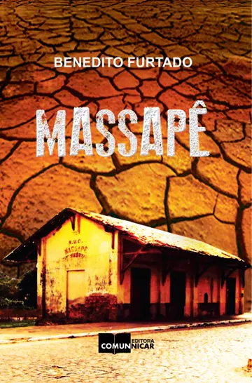
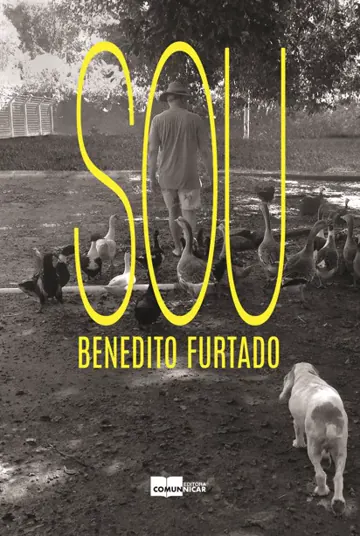
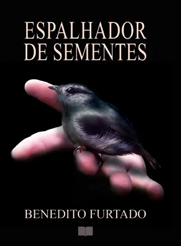
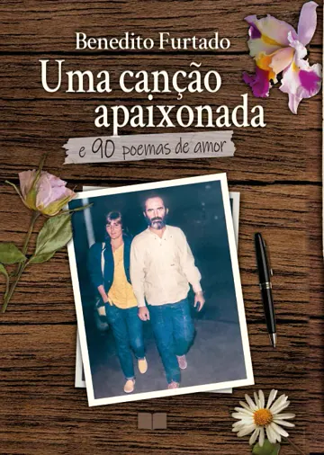

Do sertão de Sobral ao porto de Santos, Benedito Furtado construiu uma trajetória
em que sindicalismo, mandato público, militância animal e poesia não são capítulos
separados. São o mesmo compromisso.
32Leis de proteção animalAprovadas entre 2004 e 2026
7Livros publicadosPoesia de humanismo crítico
1962Em Santos desdeChegou de Sobral aos 12 anos
Quem é
Um homem detravessias
Nasceu em Sobral, no Ceará, em 1950. Aos 12 anos desceu para Santos,
e nunca mais saiu.
Foi líder estudantil, jornalista formado pela FACOS, trabalhador da Codesp,
presidente do sindicato dos portuários e de uma confederação nacional.
Hoje cumpre o nono mandato como vereador. No caminho, escreveu sete livros
de poesia e mais de trinta leis pelos animais. É a mesma pessoa em todas
essas funções. É isso que explica o resto.
NascimentoSobral, Ceará, 1950
FormaçãoJornalismo pela FACOS
SindicalismoPresidiu o sindicato dos portuários
1950Sobral, Ceará
Benedito Furtado de Andrade nasceu em 18 de fevereiro de 1950, em Sobral, e traz
consigo as marcas do sertão nordestino: a resistência, o senso comunitário, a
percepção precoce das desigualdades e uma sensibilidade aguçada diante da dor,
humana e não humana.
1962A chegada a Santos
Aos 12 anos migrou para o Sudeste e se estabeleceu em Santos. A cidade se tornaria
não apenas seu domicílio, mas o principal palco de sua atuação social, política,
sindical, cultural e humanitária.
FACOSA palavra
Graduado em Jornalismo pela Faculdade de Comunicação de Santos, desenvolveu cedo uma
relação orgânica com a palavra, não apenas como instrumento de comunicação, mas como
ferramenta de questionamento, denúncia e construção de consciência.
Na universidade destacou-se como líder estudantil, no Diretório Acadêmico Júlio de
Mesquita Filho, onde já se revelava sua vocação para a representação coletiva e a
defesa dos direitos sociais.
CodespO porto e o sindicato
Atuou por décadas na Companhia Docas de Santos e chegou à presidência do Sindicato
dos Empregados na Administração dos Serviços Portuários de Santos e da Confederação
Nacional dos Trabalhadores em Transportes Marítimos, Fluviais e Aéreos.
No sindicalismo, sua marca foi a defesa intransigente da dignidade do trabalhador e o
diálogo responsável, evitando tanto o conformismo quanto o radicalismo estéril.
2004A causa animal
Um dos fundadores da ONG Defesa da Vida Animal, em Santos. Sua atuação extrapolou o
mandato parlamentar, envolvendo protetores independentes, voluntários, veterinários e
ativistas. Há aí uma compreensão de fundo: a forma como uma sociedade trata seus
animais revela seu grau de civilidade.
2025Nono mandato · 2025-2028
Como vereador de Santos, hoje no nono mandato, construiu uma atuação identificada com
causas éticas, sociais e ambientais, com destaque para a defesa das camadas pobres da
cidade e para a proteção e o bem-estar animal.

Valores e princípios
O que se repete em todas as funções
01
A vida em primeiro lugar
A forma como uma sociedade trata seus animais revela seu grau de civilidade.
A violência contra o animal não é desvio isolado: é sintoma da banalização da vida.
02
Diálogo sem conformismo
Negociação consciente, sem abrir mão de princípios. Nem o conformismo que
aceita tudo, nem o radicalismo estéril que não muda nada.
03
Coerência
A mesma linha ética como sindicalista, parlamentar, ativista e poeta:
defesa da vida, respeito à diversidade e crítica às estruturas de poder desumanizantes.
04
A dúvida como método
Uma figura pública que não se constrói sobre a ideia de infalibilidade.
Os textos revelam dúvidas e inquietações, e é isso que os aproxima de quem lê.
Destaque
Proteção animal
32 leis em 22 anos, do fim dos circos com animais ao cadastro municipal de maus-tratos.
01
Direitos dos trabalhadores
Décadas na Codesp e a presidência do sindicato dos portuários de Santos.
02
Comunidades carentes
Defesa das camadas pobres da cidade como eixo permanente do mandato.
03
Meio ambiente
Fogos silenciosos, fachadas que não matam aves, restrição a produtos tóxicos.
04
Cultura e literatura
Sete livros de poesia e um calendário municipal que reconhece protetores.
05
Ética na vida pública
Negociação consciente, sem conformismo e sem radicalismo estéril.
Atuação
Leis que já existem, não promessas
Entre 2004 e 2026, Benedito Furtado assinou 32 leis municipais de proteção e bem-estar
animal em Santos. Elas tiraram os animais dos circos, proibiram a vivissecção e criaram
a CODEVIDA, o Fundo Municipal de Proteção Animal, o Banco de Ração e a Farmácia Pública
Veterinária. Todas estão listadas abaixo, com número e data.
A linha do tempo
Filtre por tipo de mudança. Cada item traz a norma exata para consulta
no portal da Câmara Municipal de Santos.
2004
2005
2006
2007
2009
2011
2012
2013
2014
2017
2018
2019
2020
2021
2022
2023
2024
2025
2026
2004Lei Complementar 498, de 28/05/2004
Proibiu que animais apreendidos pela Prefeitura e não retirados pelos tutores fossem doados a instituições de pesquisa e ensino que usam animais vivos. Foi o fim da vivissecção como destino legal desses animais em Santos.
Fim da exploração
2004Lei Complementar 510, de 23/12/2004
Proibiu alvará a circos e casas de diversão que usem animais em espetáculos, silvestres ou domésticos. Até então era rotina que circos com animais se instalassem na cidade.
Fim da exploração
2005Lei Complementar 533, de 10/05/2005
Disciplinou a criação, propriedade, posse, guarda, uso e transporte de cães e gatos no município: a lei-quadro que as normas seguintes passaram a complementar.
Convívio urbano
2005Lei Complementar 542, de 27/09/2005
Criou a CODEVIDA, Coordenadoria de Proteção à Vida Animal, vinculada à Secretaria de Meio Ambiente. Deu à causa um órgão público com estrutura e orçamento.
Estrutura pública
2006Lei 2.413, de 13/07/2006
Criou o Conselho Municipal para Proteção à Vida Animal, abrindo a política pública à participação de protetores, veterinários e sociedade civil.
Estrutura pública
2006Lei 2.414, de 13/07/2006
Instituiu no calendário oficial o Dia do Amigo, Protetor e Ativista da Causa Animal: reconhecimento público a quem cuida por conta própria.
Convívio urbano
2007Lei Complementar 611, de 14/12/2007
Proibiu alvará a estabelecimentos que usem animais comercialmente em serviços de guarda, segurança e vigilância.
Fim da exploração
2009Lei Complementar 661, de 16/10/2009
Estendeu a proibição às empresas de outras cidades que prestam serviço de guarda e vigilância com cães em Santos. Fechou a brecha da lei anterior.
Fim da exploração
2011Lei 2.757, de 09/05/2011
Criou o Fundo Municipal de Proteção e Bem-Estar Animal, dando fonte de recursos própria às ações de cuidado.
Estrutura pública
2011Lei Complementar 738, de 18/11/2011
Implantou o microchip como registro individual e permanente (RGA eletrônico), nos padrões ISO 11784 e 11785. Todos os cães adotados na CODEVIDA passaram a ser microchipados.
Estrutura pública
2012Lei Complementar 786, de 17/12/2012
Autorizou e regulou o transporte de animais domésticos no serviço municipal de transporte coletivo de passageiros.
Convívio urbano
2013Lei Complementar 806, de 28/08/2013
Instituiu normas para o transporte de animais feito por estabelecimentos comerciais e prestadores de serviço no município.
Fiscalização
2013Lei Complementar 811, de 21/11/2013
Estabeleceu normas para atendimento e proteção dos animais no município.
Cuidado e acesso
2014Lei 3.064, de 02/12/2014
Proibiu alvará a instituições que realizem vivissecção ou usem animais em práticas experimentais, inclusive para fins pedagógicos, industriais, comerciais ou de pesquisa científica.
Fim da exploração
2017Lei Complementar 955, de 17/01/2017
Proibiu fogos de artifício ruidosos na área urbana, em espaços públicos e privados, liberando apenas os fogos de vista sem estampido. Protege animais, autistas e idosos.
Convívio urbano
2017Lei Complementar 988, de 04/12/2017
Vedou fachadas com superfícies contínuas de vidro de efeito refletivo ou espelhado nos edifícios da cidade, uma das principais causas de morte de aves em áreas urbanas.
Convívio urbano
2018Lei Complementar 996, de 18/04/2018
Proibiu o trânsito de veículos, motorizados ou não, transportando cargas vivas nas áreas urbanas e de expansão urbana do município.
Fim da exploração
2018Lei Complementar 997, de 2018
Disciplinou para quem os animais resgatados pela Prefeitura podem ser doados, completando a lei de 2004.
Estrutura pública
2019Lei Complementar 1.051, de 09/09/2019
Proibiu alvará a canis, gatis e estabelecimentos comerciais que pratiquem a venda de animais domésticos. Adoção passou a ser o caminho.
Fim da exploração
2020Lei Complementar 1.100, de 10/09/2020
Tipificou o confinamento e o acorrentamento inadequado como maus-tratos, com critérios objetivos de espaço, sol, água, higiene e coleira. Obrigou câmeras de monitoramento nos serviços de banho e tosa, com 30 dias de guarda das imagens.
Fiscalização
2020Lei Complementar 1.105, de 29/10/2020
Proibiu conduzir animais presos por cordas, coleiras ou correntes a veículos como bicicletas, motos, carros e carroças, qualquer que seja a finalidade.
Fim da exploração
2021Lei Complementar 1.144, de 10/12/2021
Tornou infração deixar de prestar socorro a animal atropelado, quando for possível fazê-lo sem risco pessoal.
Cuidado e acesso
2022Lei 4.039, de 22/06/2022
Criou o Programa de Conscientização e Combate ao Abandono de Animais e instituiu o Outubro Animal, mês municipal de combate ao abandono.
Cuidado e acesso
2023Lei Complementar 1.188, de 02/01/2023
Regularizou os estabelecimentos comerciais pet friendly, que até então operavam numa zona proibida por lei.
Convívio urbano
2023Lei 4.177, de 21/03/2023
Instituiu o Banco de Ração para Animais Domésticos, para atender tutores e protetores sem condições de manter a alimentação.
Cuidado e acesso
2023Lei Complementar 1.212, de 28/08/2023
Garantiu reconhecimento oficial a empresas, associações e organizações que fazem doações ao Banco de Ração, criando incentivo à contribuição contínua.
Cuidado e acesso
2024Lei Complementar 1.271, de 21/05/2024
Autorizou fornecer alimento e água em espaços públicos a animais abandonados e comunitários, com regras de higiene e manutenção dos comedouros. Protegeu juridicamente quem já fazia isso.
Cuidado e acesso
2024Lei Complementar 1.273, de 11/07/2024
Proibiu o uso e o escoamento, na lavagem de calçadas, de substâncias tóxicas, corrosivas, mutagênicas ou não biodegradáveis, com multa de R$ 1.500 a R$ 10.000.
Convívio urbano
2025Lei 4.610, de 24/03/2025
Instituiu o Programa Farmácia Pública Veterinária no município, dando acesso a medicamentos a quem não pode pagar por eles.
Cuidado e acesso
2025Lei Complementar 1.306, de 24/10/2025
Vedou aos condomínios residenciais proibir animais domésticos nas unidades e nas áreas comuns, com multa de até R$ 10.000 ao infrator.
Convívio urbano
2025Lei Complementar 1.310, de 03/12/2025
Incluiu entre as infrações deixar animais sozinhos em imóveis vazios ou com os moradores ausentes por período prolongado.
Fiscalização
2026Lei 4.723, de 28/01/2026
Criou o Cadastro Municipal de Pessoas Envolvidas em Maus-Tratos contra Animais, sob a CODEVIDA, com encaminhamento à Polícia Civil e ao Ministério Público. Quem está no cadastro fica proibido de adotar.
Fiscalização
1 de 32
Nenhuma lei nesta categoria.
Lista compilada a partir da cartilha Leis do Furtado: Animais, do gabinete.
Os textos integrais estão no portal da Câmara Municipal de Santos.
Obra
A palavra como ferramenta
Sete livros de poesia em que convivem memória, denúncia social, reflexão filosófica e
afeto. Uma escrita que interroga o mundo, desconfia das certezas fáceis e reconhece as
próprias contradições. É um exercício de autoanálise em que o “eu” do poema serve de
espelho do coletivo.
01
Um Pouco de Mim

02
Massapê
03
Doce Cidade

04
Sou

05
Espalhador de Sementes
06
Tempos de Esperança

07
Uma Canção Apaixonada e 90 Poemas de Amor
Dedicado à esposa
1 de 7
Acompanhe
O mandato em movimento
Leis, bastidores e histórias de quem trabalha todos os dias pela cidade e pela
proteção da vida animal.
Este site usa cookies. Usamos apenas o necessário para o
site funcionar e, com o seu aceite, para entender quais páginas são mais lidas. Você pode
recusar sem perder nenhuma funcionalidade. Detalhes na
Política de Privacidade.